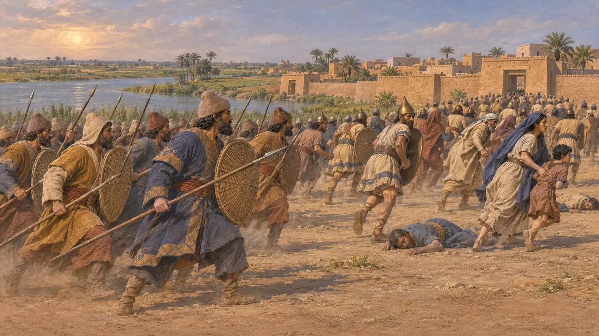
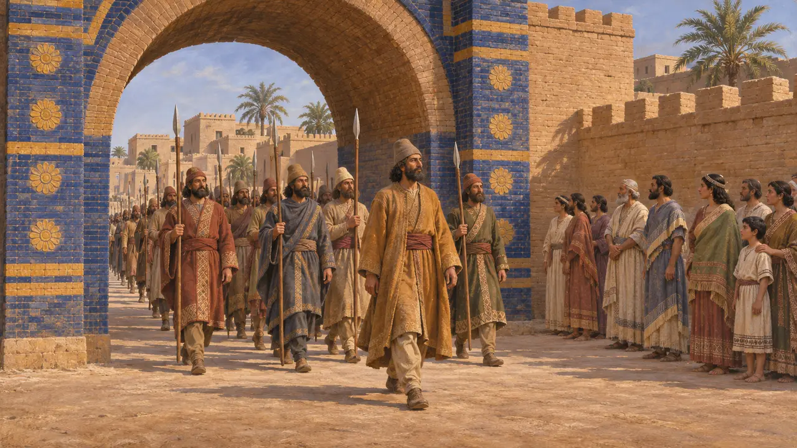
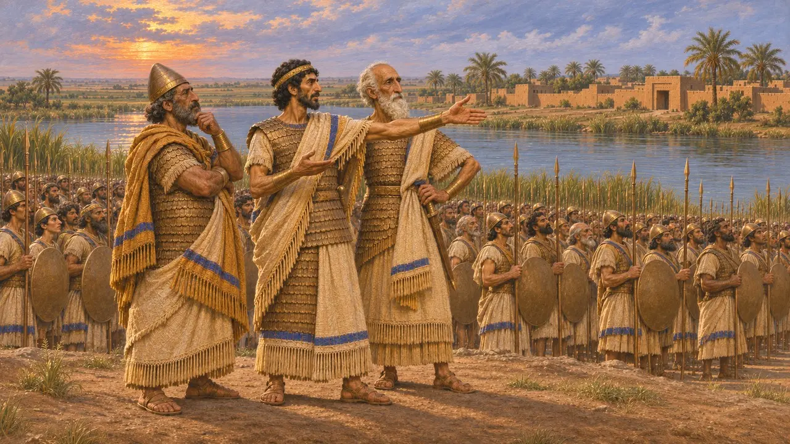
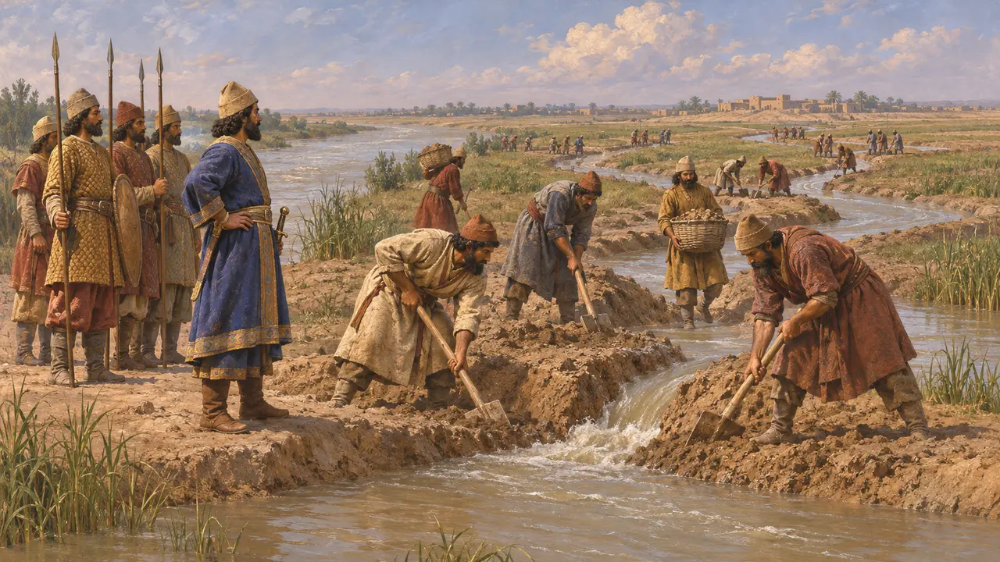
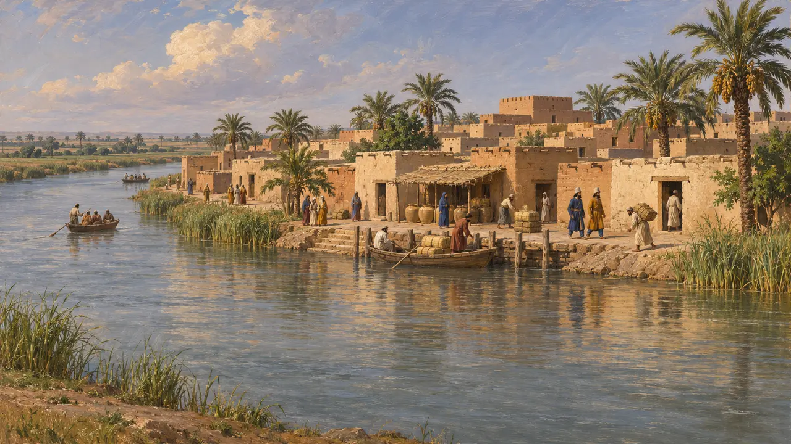

오피스
바빌론 북쪽 티그리스강변의 도시로, 기원전 539년 전투가 벌어진 곳
오피스는 바빌로니아의 티그리스강변에 있던 도시로, 훗날 셀레우키아가 들어선 지역에 있었다. 나보니두스 연대기에 따르면 기원전 539년 타슈리투 달에 키루스의 군대가 이곳에서 바빌로니아군과 싸웠고, 곧이어 바빌론에 입성했다. 이 전투로 키루스의 바빌로니아 정복은 마지막 단계에 접어들었다.
게임에서: 이 게임에는 오피스를 다루는 레벨이나 메커니즘이 없습니다. 오피스는 바빌론의 함락을 비롯한 백과사전의 사건 문서에서만 키루스가 나보니두스의 군대를 격파한 곳으로 언급됩니다.

나보니두스 연대기에 기록된 전투
당대 기록점토판에 쓰인 바빌로니아 문헌인 나보니두스 연대기에 따르면, 키루스는 티슈리투 달에 티그리스강변의 오피스에서 아카드군과 싸웠다. 아카드 사람들은 퇴각했고 키루스의 군대는 주민들을 죽였다고 한다. 이 연대기는 당대에 가까운 시기의 기록이지만 키루스에게 우호적이며, 이 전투를 알려 주는 주된 증거이다.
Nabonidus Chronicle (ABC 7), col. iii

전투 후의 시파르와 바빌론
당대 기록연대기에 따르면 시파르는 며칠 뒤 싸움 없이 함락되었고 나보니두스는 달아났다. 이어 구티움 총독 우그바루와 키루스의 군대가 전투 없이 바빌론에 입성했다. 키루스 본인은 약 2주 뒤에 도시로 들어왔다. 이 기록에는 바빌론에서 벌어진 전투에 대한 서술이 없다.
Nabonidus Chronicle (ABC 7), col. iii

바빌로니아인을 지휘한 사람
분쟁 중현존하는 연대기 텍스트는 나보니두스가 오피스에서 군대를 이끌었다고 말하지 않으며, 그가 그랬다는 게임의 설명은 기록의 범위를 넘어선다. 연대기는 그가 시파르에서 달아날 때에야 그의 이름을 다시 언급한다. 다른 바빌로니아 문헌에는 그의 아들 벨사자르가 군사 문제에서 활동한 모습이 나오므로, 일부 역사가들은 그나 다른 지휘관들이 전장을 맡았다고 본다.
Nabonidus Chronicle (ABC 7), col. iii

티그리스강 원정에 관한 헤로도토스의 기록
고대의 전승헤로도토스는 키루스가 바빌론으로 진군한 일과, 도시 앞 벌판에서 벌어진 전투를 이야기하는데, 이 전투 뒤 바빌로니아인은 성안에 갇혔다. 또한 키루스가 귄데스강을 여러 물길로 나눈 일도 전한다. 그는 오피스를 언급하지 않으며, 유프라테스강의 물길을 돌려 바빌론을 함락했다는 그의 이야기는 전투 없이 함락되었다고 기록한 연대기의 항목과 다르다.
Herodotus 1.189-191

후대의 도시
고대의 전승오피스는 줄곧 널리 알려진 도시로 남았다. 크세노폰은 1만 용병의 행군 중에 이 도시가 티그리스강변에 있다고 적었고, 아리아노스는 알렉산드로스가 324년에 이곳에서 집회를 열고 반란에 맞섰다고 기술한다. 이 후대의 구절들은 이곳의 위치를 보여 줄 뿐, 기원전 539년에 대해서는 아무 말도 하지 않는다.
Xenophon, Anabasis; Arrian, Anabasis 7.8
출처
- Nabonidus Chronicle (ABC 7)
- Herodotus 1.189-191
- P. Briant, From Cyrus to Alexander, 2002
- Xenophon, Anabasis
- Arrian, Anabasis 7.8